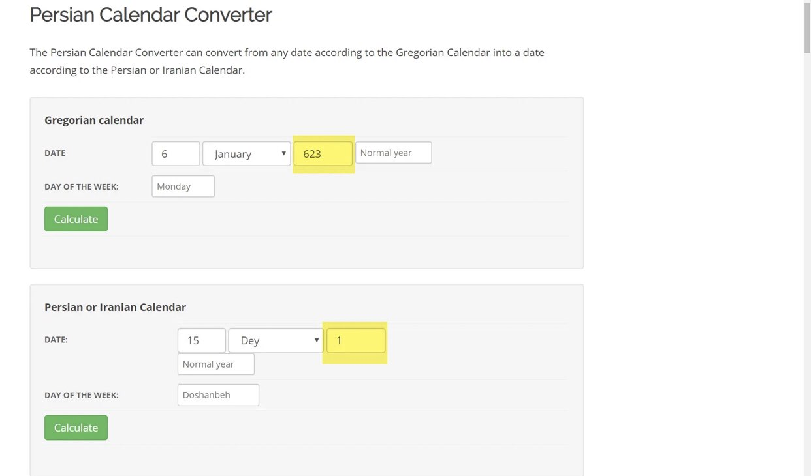
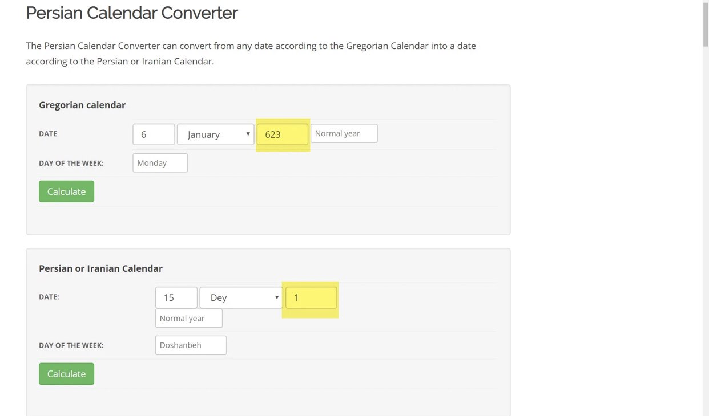

First we need to agree this isn’t even a good argument
They put in place that for God to split the moon it must have consequences
That is not true at all the definition of “miracle” is out of scientific terms
And here we go and refute the argument
1.Nasa said it never happened
Actually nasa said “current” what is the difference ? Means right now we didn’t find
evidence doesn’t deny finding later
Now lets look at the evidence we have
First muslim evidence
Musnad æAbƒ´ DƒÅw≈´d A·π≠-·π¨ayƒÅlisƒ´ (293): ‚ÄúFrom ‚ÄòAbdullah: ‚ÄòThe moon has split at the time of the Messenger of
Allah (SAWA), so Quraysh has said: “This is the magic of Ibn Abi Kabshah, so they said: ‘wait till the travelers
come to you, for Muhammad cannot enchant all of you, then the travelers came and said the same thing -that the moon
was split-.’”
Grade: Sahih (authentic)
In nadhm al-hadith al-mutawatir page number 211 subject number 264 or states
and the reports of the moon split as ibn sobki said that the moon split is mutawatir (mass transmitted) and found in the Qūr’ān
and the two Sahih (bukhari and Muslim)
Historically speaking are hadith forgeries
So even saying that we don’t have any other source won’t discredit it cause sources get lost throughout history
Shaykh ibn Salih al-‘Uthaymeen notes:
if they said why didn’t the Indian hsitorians mention it
“They are answered: Maybe they had in that night clouds that stopped them from seeing the moon split or we say
that the moon split didn’t last for long or we say at that time other people were sleeping.”
Sharh al-‘aquidah al-Safraniyah 560-561
 https://youtu.be/bJEaAinrccg BY SHEIKH UTHMAN IBN FAROOQ
Now onto the non Muslim evidence
First Persian manuscripts
For each people there is an important event that caused the time starting ratio.
The book of maya hieroglyphic writings page number 231 tells us that in the 7th century they started counting
because something important and bas happened
This article was shared long ago talking and explaining this event caused by the splitting of the moon without
knowing they are attributing a miracle to the prophet this article was changed 54X next but lets examine what is
in it to see if it is true or false
Lets pick up the first here it says if we searched this code we are going to find a palace of the moon being
shakes by quack and question marks around
Lets go to this website basically a trusted source for verifying codes
And here we got it the article is exactly accurate
https://youtu.be/bJEaAinrccg BY SHEIKH UTHMAN IBN FAROOQ
Now onto the non Muslim evidence
First Persian manuscripts
For each people there is an important event that caused the time starting ratio.
The book of maya hieroglyphic writings page number 231 tells us that in the 7th century they started counting
because something important and bas happened
This article was shared long ago talking and explaining this event caused by the splitting of the moon without
knowing they are attributing a miracle to the prophet this article was changed 54X next but lets examine what is
in it to see if it is true or false
Lets pick up the first here it says if we searched this code we are going to find a palace of the moon being
shakes by quack and question marks around
Lets go to this website basically a trusted source for verifying codes
And here we got it the article is exactly accurate
 Here then it Quotes the Madrid codex basically found in Madrid Spain he Quotes pages 90-91 lets check that
Exact same description
Now someone may ask how do you know the rabbit is the moon ?
1st we must know maya is divided in 2 parts pre-classical and classical and after classical this happened in
the pre and classical period
-Source: Maya Hieroglyphic writing Second Edition,2011 page number 1
The instant happened in the late or classical period
Now we got to the encyclopedia we will find out in the preclassical to classical the rabbit actually
meant and signified the moon
It also may be a coincidence the day of the split of the moon is the day they changed there time

For the question how do you know it is from the 6-9 century
-Source: mexicolore
How do you know it is authentic
https://www.telegraph.co.uk/news/2018/08/31/mexican-historians-prove-authenticity-looted-ancient-mayan-text/
Time objection
Now we head to the king of india
The idea that it is a forgery came by a Hindu book to make Islam look bad they approved he went there but changed
the dates, to 835 A.D
Now Dr hassena v.a has a whole research on this lets read the most important passages
Otto Loth, a German Orientalist, wrote in his 1877 Catalogue of the Arabic Manuscripts in the Library of the India
Office, volume 1, p. 299, also mentions the following manuscript:
A fabulous account of the first settlement of the Muhammadans in Malabar, under king Shakrûti of Cranganore,
a contemporary of Muhammad, who was converted to Islam by the miracle of the division of the moon.
‐-----------
George Milne Rae wrote in his 1892 book on the Christians of the region, The Syrian Church in India, p. 169:
The last Emperor of Kerala was Cheraman Perumal. The closing act in the drama of his life is remarkable even after
it has been stripped of sundry embellishments and reduced to a form in which it can be accepted both by the Hindus
and the Mohammedans of that part of the country. It turned on a strange dream. Cheraman Perumal dreamt that the full
moon appeared on the night of new moon at Mecca in Arabia and that when on the meridian it split into two one half
remaining in the sky and the other half descending to the foot of a hill called Abikubais where the two
halves joined together and then set.
-------------
Nathan Katz, in his book Who Are the Jews of India? puts forward an even more decisive argument,
writing in p. 21:
Local Hindus share the narrative. The nineteenth-century, quasi-historical Malayalam text, the Keralolpatti,
records that the last Cheraman Perumal king went to Makkah, converted to Islam, and became known as Makkattupoya Perumal,
“the emperor who went to Makkah.” As ritual recompense for this familial apostasy, the maharajahs of Travancore used to recite,
when they received swords of office at their coronation, “I will keep this sword until the uncle who has gone to Mecca [Makkah]
returns.” The text and the custom reveal a basic familial structure for interreligious
relationships in South India. The apostate king remains the “uncle” of succeeding generations of maharajahs.
https://www.iiste.org/Journals/index.php/HRL/article/download/20143/20152
Here then it Quotes the Madrid codex basically found in Madrid Spain he Quotes pages 90-91 lets check that
Exact same description
Now someone may ask how do you know the rabbit is the moon ?
1st we must know maya is divided in 2 parts pre-classical and classical and after classical this happened in
the pre and classical period
-Source: Maya Hieroglyphic writing Second Edition,2011 page number 1
The instant happened in the late or classical period
Now we got to the encyclopedia we will find out in the preclassical to classical the rabbit actually
meant and signified the moon
It also may be a coincidence the day of the split of the moon is the day they changed there time

For the question how do you know it is from the 6-9 century
-Source: mexicolore
How do you know it is authentic
https://www.telegraph.co.uk/news/2018/08/31/mexican-historians-prove-authenticity-looted-ancient-mayan-text/
Time objection
Now we head to the king of india
The idea that it is a forgery came by a Hindu book to make Islam look bad they approved he went there but changed
the dates, to 835 A.D
Now Dr hassena v.a has a whole research on this lets read the most important passages
Otto Loth, a German Orientalist, wrote in his 1877 Catalogue of the Arabic Manuscripts in the Library of the India
Office, volume 1, p. 299, also mentions the following manuscript:
A fabulous account of the first settlement of the Muhammadans in Malabar, under king Shakrûti of Cranganore,
a contemporary of Muhammad, who was converted to Islam by the miracle of the division of the moon.
‐-----------
George Milne Rae wrote in his 1892 book on the Christians of the region, The Syrian Church in India, p. 169:
The last Emperor of Kerala was Cheraman Perumal. The closing act in the drama of his life is remarkable even after
it has been stripped of sundry embellishments and reduced to a form in which it can be accepted both by the Hindus
and the Mohammedans of that part of the country. It turned on a strange dream. Cheraman Perumal dreamt that the full
moon appeared on the night of new moon at Mecca in Arabia and that when on the meridian it split into two one half
remaining in the sky and the other half descending to the foot of a hill called Abikubais where the two
halves joined together and then set.
-------------
Nathan Katz, in his book Who Are the Jews of India? puts forward an even more decisive argument,
writing in p. 21:
Local Hindus share the narrative. The nineteenth-century, quasi-historical Malayalam text, the Keralolpatti,
records that the last Cheraman Perumal king went to Makkah, converted to Islam, and became known as Makkattupoya Perumal,
“the emperor who went to Makkah.” As ritual recompense for this familial apostasy, the maharajahs of Travancore used to recite,
when they received swords of office at their coronation, “I will keep this sword until the uncle who has gone to Mecca [Makkah]
returns.” The text and the custom reveal a basic familial structure for interreligious
relationships in South India. The apostate king remains the “uncle” of succeeding generations of maharajahs.
https://www.iiste.org/Journals/index.php/HRL/article/download/20143/20152
 So even if non Muslims disprove me on this it would cause nothing since I already have muslim evidences
it would change nothing now they will head to say he bewitched them like Quraish did
https://m.youtube.com/watch?v=N1-iaApYmLY&t=153s
long reddit link
long link
Some video recommendations only for arab speakers:
https://m.youtube.com/watch?v=4qus9878LU4
https://m.youtube.com/watch?v=sAp03ujMy90
https://m.youtube.com/watch?v=Q8PYY5ArbCk
Now I will show classical scholars response to these foolish arguemnts
Al-Khattabi, may God have mercy on him, said:
"This is something that a special people from the people of Mecca asked for what was narrated by Anas bin Malik,
so the Prophet (may Allah's peace and blessings be upon him) saw it at night because the moon is the sign of the
night, and it has no authority in the day, and most people at night sleep and live in buildings and withholding,
Before healing and consistency. The moon often has an eclipse, and people do not feel it, until one of them and
individuals from their group tell them.
Rather, it was as much as the moment when she was visually aware of it" ‘Ilam al-hadith " (2/1619).
So even if non Muslims disprove me on this it would cause nothing since I already have muslim evidences
it would change nothing now they will head to say he bewitched them like Quraish did
https://m.youtube.com/watch?v=N1-iaApYmLY&t=153s
long reddit link
long link
Some video recommendations only for arab speakers:
https://m.youtube.com/watch?v=4qus9878LU4
https://m.youtube.com/watch?v=sAp03ujMy90
https://m.youtube.com/watch?v=Q8PYY5ArbCk
Now I will show classical scholars response to these foolish arguemnts
Al-Khattabi, may God have mercy on him, said:
"This is something that a special people from the people of Mecca asked for what was narrated by Anas bin Malik,
so the Prophet (may Allah's peace and blessings be upon him) saw it at night because the moon is the sign of the
night, and it has no authority in the day, and most people at night sleep and live in buildings and withholding,
Before healing and consistency. The moon often has an eclipse, and people do not feel it, until one of them and
individuals from their group tell them.
Rather, it was as much as the moment when she was visually aware of it" ‘Ilam al-hadith " (2/1619).
 Al-Qurtubi (May Allah have mercy on him) states:
“Ibn Omar (RA) said that this Hadith was narrated by many of Sahabi (RA), Like: Abdullah Ben Messaoud,
Anas, Ibn Abbas, Ibn Omar, Hudifa, Ali, Jubayr Ibn Mutaim, Etc (RA). And had also narrated by Tabiein of Sahabi
and therefore conveys (الجم الغفير), And the numbers contained grow up until it ends up with us, And their light
upon us, And adds to this what was came from Quran to every human, Indeed the right teaches was shown due to this
miracle that can't be denied by sane, But it's been excluding by a lot of atheists, And some of people of knowledge
by if it's this then all people must participate
to realize that. And the answer is that it would only be necessary if all of people around the globe are conscious
of it at the same time and it is not like that for the moon comes up to people before coming to others it would also
be necessary if the length of the split was long and it wasn’t like that it was rather for a short time, also it was
night and the norm of people at night is to sleep and from that the objections aren’t counted counted and do not work.”
#Al-Mufhim volume 7, pages 403-404
Al-Qurtubi (May Allah have mercy on him) states:
“Ibn Omar (RA) said that this Hadith was narrated by many of Sahabi (RA), Like: Abdullah Ben Messaoud,
Anas, Ibn Abbas, Ibn Omar, Hudifa, Ali, Jubayr Ibn Mutaim, Etc (RA). And had also narrated by Tabiein of Sahabi
and therefore conveys (الجم الغفير), And the numbers contained grow up until it ends up with us, And their light
upon us, And adds to this what was came from Quran to every human, Indeed the right teaches was shown due to this
miracle that can't be denied by sane, But it's been excluding by a lot of atheists, And some of people of knowledge
by if it's this then all people must participate
to realize that. And the answer is that it would only be necessary if all of people around the globe are conscious
of it at the same time and it is not like that for the moon comes up to people before coming to others it would also
be necessary if the length of the split was long and it wasn’t like that it was rather for a short time, also it was
night and the norm of people at night is to sleep and from that the objections aren’t counted counted and do not work.”
#Al-Mufhim volume 7, pages 403-404
 Rahmatullah Al-Hindi notes:
“And fith because of the diffrences of upcoming of the moon it isn’t the same view for all people around the
globe he can come up to people before coming to others, also that it is frequent historians writes earth
phenomenons without the atmospherical (heaven) ones only but a few and it was in England and in france scholars
of ignorance they didn’t gain knowledge but after the a long time of the prophets (pbuh) time”
#Izhar Ul-Haqq, page 1041
“At the turn of the seventh century, a powerful South Indian king beheld an extraordinary astronomical event.
Gazing at the stars sparkling above the Arabian Sea one night, he saw the moon divide into two halves,
before it once again merged back into its customary shape. The awestruck king was Cheraman Perumal,
the Hindu sovereign of the Chera dynasty, one of the three ancient Tamil royal houses that ruled over southern India.
His realm was the westernmost portion of the Tamilakam, a region known to foreigners as Malabar or simply “the land of pepper”;
its limits correspond more or less to those of the
present-day Indian state of Kerala (which takes it names from the Chera dynasty). Upon witnessing this unwonted
celestial occurrence, Cheraman Perumal summoned his Hindu astronomers, who although competent enough to accurately
forecast eclipses, could not account for this unprecedented phenomenon”. (Sabastian R. Prange: Monsoon Islam, p. 1)
He further says:
“Some years later, a group of Jewish and Christian traders disembarked on the Malabar Coast. They....
[were] granted a royal audience, these traders told the king about an agitator back in Arabia, a man called
Muḥammad ibn ‘Abd-Allāh who claimed to be a prophet and was said to have employed magic to split the moon. A few years later still,
a group of Muslim pilgrims arrived at the Chera court on their way to Sri Lanka, where they intended to visit the venerated site of Adam’s Peak.
The king quizzed these Muslims about their pilgrimage, but above all about their faith and its prophet. They related to
him the miracle of the splitting of the moon, as recorded in sūrah al-Qamar (“The Moon”) of the Quran. The king
requested that the pilgrims return to his court on their homeward journey. When they did so, he divided his realm among his ministers
before joining the Muslims on their voyage back to Arabia. There, Cheraman Perumal was converted to Islam at the hands of the Prophet himself,
becoming the first Indian Muslim. After a few years in Arabia, the convert king decided to return to his
native land but died on the Omani coast before he could set sail for India”. (Ibid. pp. 1-2)
Many other classical scholars responded btw such as ar-razy and al-baklawani May Allah mercy on them
The conclusion: even if non Muslims scholars didn’t note it it doesn’t affect the miracle but they actually did
as we showed
Go back to the üîù
Rahmatullah Al-Hindi notes:
“And fith because of the diffrences of upcoming of the moon it isn’t the same view for all people around the
globe he can come up to people before coming to others, also that it is frequent historians writes earth
phenomenons without the atmospherical (heaven) ones only but a few and it was in England and in france scholars
of ignorance they didn’t gain knowledge but after the a long time of the prophets (pbuh) time”
#Izhar Ul-Haqq, page 1041
“At the turn of the seventh century, a powerful South Indian king beheld an extraordinary astronomical event.
Gazing at the stars sparkling above the Arabian Sea one night, he saw the moon divide into two halves,
before it once again merged back into its customary shape. The awestruck king was Cheraman Perumal,
the Hindu sovereign of the Chera dynasty, one of the three ancient Tamil royal houses that ruled over southern India.
His realm was the westernmost portion of the Tamilakam, a region known to foreigners as Malabar or simply “the land of pepper”;
its limits correspond more or less to those of the
present-day Indian state of Kerala (which takes it names from the Chera dynasty). Upon witnessing this unwonted
celestial occurrence, Cheraman Perumal summoned his Hindu astronomers, who although competent enough to accurately
forecast eclipses, could not account for this unprecedented phenomenon”. (Sabastian R. Prange: Monsoon Islam, p. 1)
He further says:
“Some years later, a group of Jewish and Christian traders disembarked on the Malabar Coast. They....
[were] granted a royal audience, these traders told the king about an agitator back in Arabia, a man called
Muḥammad ibn ‘Abd-Allāh who claimed to be a prophet and was said to have employed magic to split the moon. A few years later still,
a group of Muslim pilgrims arrived at the Chera court on their way to Sri Lanka, where they intended to visit the venerated site of Adam’s Peak.
The king quizzed these Muslims about their pilgrimage, but above all about their faith and its prophet. They related to
him the miracle of the splitting of the moon, as recorded in sūrah al-Qamar (“The Moon”) of the Quran. The king
requested that the pilgrims return to his court on their homeward journey. When they did so, he divided his realm among his ministers
before joining the Muslims on their voyage back to Arabia. There, Cheraman Perumal was converted to Islam at the hands of the Prophet himself,
becoming the first Indian Muslim. After a few years in Arabia, the convert king decided to return to his
native land but died on the Omani coast before he could set sail for India”. (Ibid. pp. 1-2)
Many other classical scholars responded btw such as ar-razy and al-baklawani May Allah mercy on them
The conclusion: even if non Muslims scholars didn’t note it it doesn’t affect the miracle but they actually did
as we showed
Go back to the üîù
Refutation of the Fatimah of the sun miracle
Christians often cite this miracle as evidence of Christianity, with mass reporting.
However when we analyse the testimonies of this event we realise it is quite exaggerated
Documentação Crítica de Fátima, p.89-91:
Among the more educated classes, no one told me that they had seen the celestial apparition, but it is certain
that all of them, learned and unlearned, manifested their faith.
Documentação Crítica de Fátima, p.126-130:
It would not be surprising if among the thousands of people present, there were others like our coachman,
to whom I asked while standing by the car at the top of the valley: ‘So, Mr. Manuel, did you like and see the sun?’…
It seems that at that moment, he was feeding the horses! Great materialist (being a very good person, by the way)… Nothing surprising.
The claim by John Haffert of everyone witnessing the events are therefore contradictory and inconsistent.
There are also some embellishments within his claim like everyone’s clothes drying up when seeing the miracle, a detail not found in original sources.
Fabrications like this raise questions to the validity of his testimony
Father Martindale also mentions individuals who failed to see the miracle. He mentions that he knew 2 English
woman and 2 Portugese women that reportedly saw nothing, perhaps due to location in crowd or distraction.
In conclusion not everyone saw this event.
Additionally, the idea that the sun had danced across the sky during the light of day, in a time when photography
was both quite advanced and widely available, makes it hard to believe only a few individuals present were able to witness the occurrence.
Photographic evidence of the event contradicts the eyewitness accounts. Many who were present claimed the people
and the earth had taken on a yellowish or purple hue, whereas colourising photographs from the time with contemporary software reveals that
people appeared entirely normal
It is worth noting that it’s unlikely the event was completely fabricated. But it’s more likely that there was
hallucinations due to ecstacy combined with rumours and exaggerations rather than an actual event due to the severe discrepancies in reports.
Satan?:
Even if we assume something supernatural took place, Islam says that Shaytaan can take human form and some
scholars say he can also cause hallucinations.
The bible also mentions that Satan masquerades as an angel of light
2 Corinthians 11:14:
And [it is] not wonderful, for Satan himself transforms himself into an angel of light.
Some of the children involved in this event proceeded to begin engaging in self-harm practices, with the
‘Virgin Mary’ never appearing to them and telling them to stop.
Would a miracle from God have such effects?
The miracle of Fatimah was also marked by prophecies, one of which completely failed to materialise.
This is ww1 ending on the day of the miracle. Some even lost faith because the war lasted longer than promise.
Father Joaquim wrote:
I have consulted many people about this, and they all confirm the same thing that the witnesses to the same
document said…what has currently cooled some people’s faith a bit is that one of the shepherds said that the war
would end the same day, or the next night, and it (the war) still went on with the whole increment.
As Deuteronomy 18:22 states:
If what a prophet proclaims in the name of the Lord does not take place or come true, that is a message the Lord
has not spoken. That prophet has spoken presumptuously, so do not be alarmed.
Al-Qadi ʿAbd al-Jabbar (d. 415 AH) explains:
« Also, it may be permissible that Allah hides it for the benefit of His servants,
except for those people [meccans] , because it may be possible that in some countries there are liars and
deceivers at that hour, and if he saw that, he would say: "The testimony has only been separated from me because
of my truthfulness." What the system mentioned may not have come in this way either, and what he assumed is invalid. »
‚Ä¢üìñ {Tathbit Dala‚Äôil | 58}
 https://apostolicislam.substack.com/p/a-new-quranic-argument-for-the-moon?sd=pf
https://apostolicislam.substack.com/p/a-new-quranic-argument-for-the-moon?sd=pf